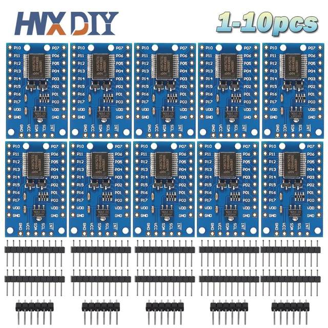
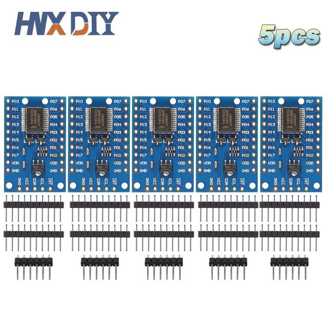
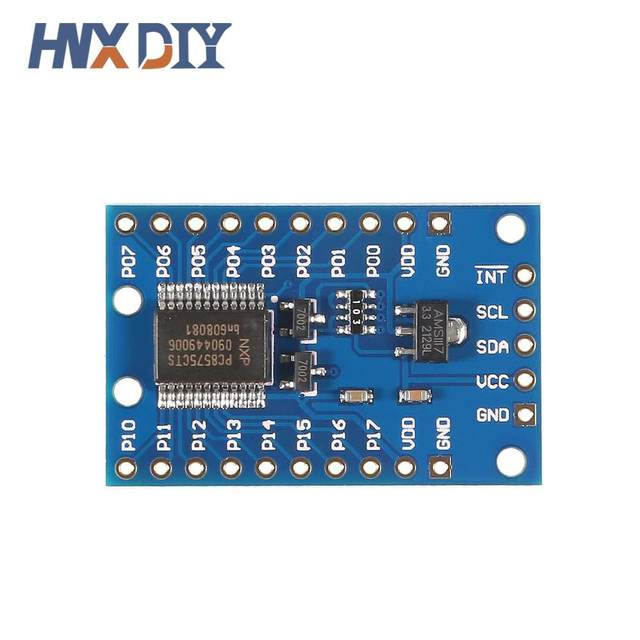
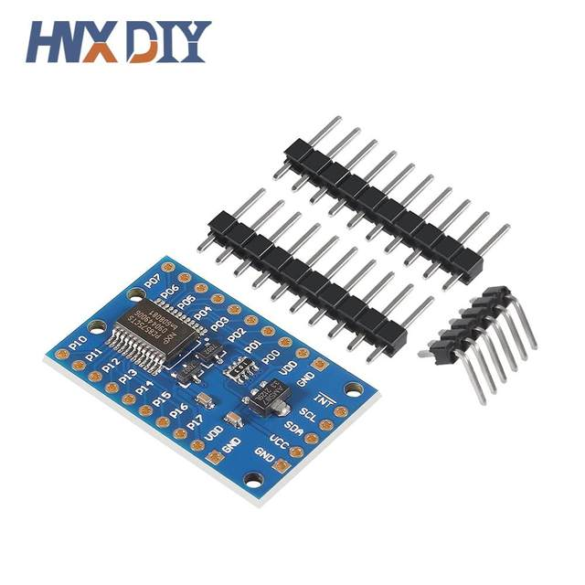
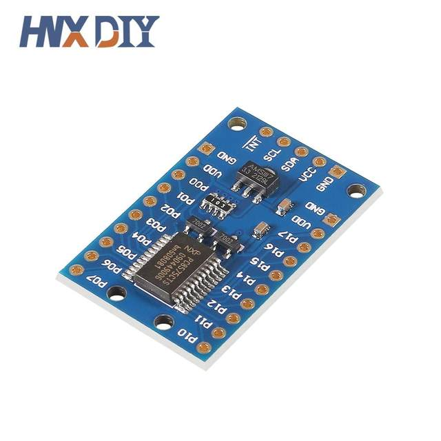
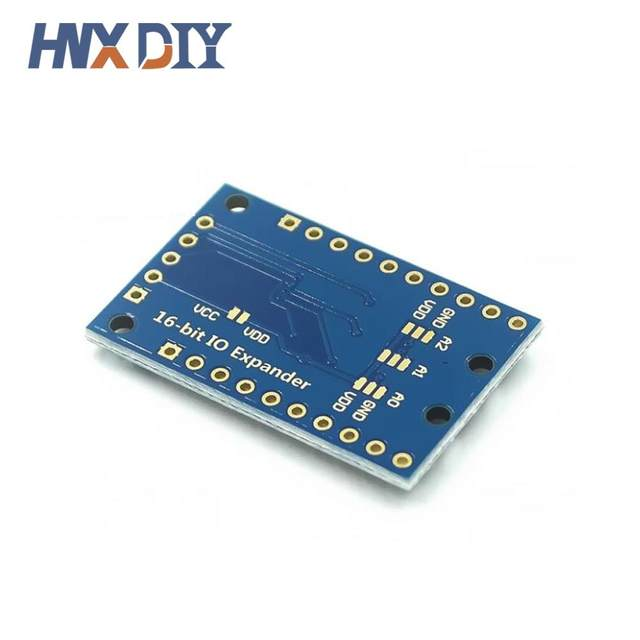
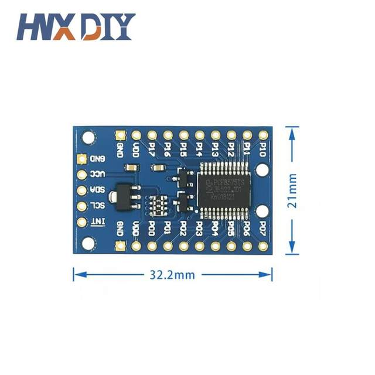

1-10pcs PCF8575 Module Expansion IO port Expander board DC 2.5-5.5V I2C communication control 16 IO ports For Arduino
Description:
Are you out of I/O pins? This powerful module allows users to scale up to 16 I/OS with just two I/OS for control! The PCF8575 is controlled via I2C interface and has 16-bit quasi-bidirectional input/output pins.
On an onboard 3.3V level converter circuit, the level of PCF8575 is 3.3V if the VCC-VDD pad is not welded. If soldered, the level will be the same as VCC
Features:
Available library: PCF8575
Operating voltage: 2.5-5.5V DC
Working current: 100mA (MAX)
I2C address: 0x20 (default), which can be modified by welding A1 and A2 selection pads.
16 individually addressable pins.
Each pin can be configured as input or output
Open drain interrupt output pin for input change interrupt.
Perfect for UNO R3 and other MCU controlled simple relays, buzzers, buttons, leds.






